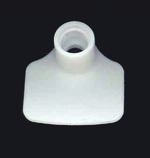

ViehVerkV
Ausfertigungsdatum: 06.07.2007
Vollzitat:
"Viehverkehrsverordnung in der Fassung der Bekanntmachung vom 26. Mai 2020 (BGBl. I S. 1170)"
| Stand: | Neugefasst durch Bek. v. 26.5.2020 I 1170 |
(+++ Textnachweis ab: 14.7.2007 +++)
(+++ Amtlicher Hinweis des Normgebers auf EG-Recht:
Umsetzung der
EWGRL 426/90 (CELEX Nr: 390L0426)
EWGRL 427/90 (CELEX Nr: 390L0427)
EWGRL 102/92 (CELEX Nr: 392L0102)
EGRL 15/2000 (CELEX Nr: 300L0015) +++)
| § 1 | Viehtransportfahrzeuge |
| § 2 | Viehladestellen |
| § 3 | Viehausstellungen, Viehmärkte |
| § 4 | Anzeige, Beschränkung und Verbot |
| § 5 | Auftrieb |
| § 6 | Amtstierärztliche Untersuchung |
| § 7 | Abtrieb von Schlachtviehmärkten und Schlachtstätten |
| § 8 | Gastställe |
| § 9 | Viehkastrierer |
| § 10 | Wanderschafherden |
| § 11 | Anzeige |
| § 12 | Viehhandelsunternehmen |
| § 13 | Transportunternehmen |
| § 14 | Sammelstellen |
| § 15 | Registrierung und Bekanntmachung der Zulassung, Anerkennung von Zulassungen |
| § 16 | Ruhen der Zulassung |
| § 17 | Transportmittel |
| § 18 | Flächen, Räume und Gerätschaften |
| § 19 | Dung, Streumaterial und Futterreste |
| § 20 | Ursprungszeugnisse, Gesundheitszeugnisse |
| § 21 | Viehhandels- und Transportkontrollbücher |
| § 22 | Desinfektionskontrollbuch |
| § 23 | Kastrations- und Klauenpflegekontrollbuch |
| § 24 | Deckregister |
| § 25 | Form, Aufbewahrung und Vorlage der Kontrollbücher und des Deckregisters |
| § 26 | Anzeige und Registrierung |
| § 27 | Kennzeichnung |
| § 28 | Anzeige der Kennzeichnung |
| § 29 | Anzeige von Bestandsveränderungen |
| § 30 | Rinderpass |
| § 31 | Stammdatenblatt |
| § 32 | Bestandsregister |
| § 33 | Verbot der Übernahme, Inverkehrbringen von Ohrmarken |
| § 34 | Kennzeichnung |
| § 35 | Anzeige von Bestandsveränderungen |
| § 36 | Begleitpapier |
| § 37 | Bestandsregister |
| § 38 | Verbot der Übernahme, Inverkehrbringen von Ohrmarken |
| § 39 | Kennzeichnung |
| § 40 | Anzeige der Übernahme |
| § 41 | Begleitpapier |
| § 42 | Bestandsregister |
| § 43 | Verbot der Übernahme, Inverkehrbringen von Ohrmarken |
| § 44 | Kennzeichnung |
| § 44a | Equidenpass |
| § 44b | Rückgabe und Ungültigmachen des Equidenpasses |
| § 44c | Verbot der Übernahme |
| § 44d | Anzeige der Kennzeichnung |
| § 45 | Tierhaltung in besonderen Fällen |
| § 46 | Ordnungswidrigkeiten |
| § 47 | Übergangsvorschriften |
| § 48 | Inkrafttreten, Außerkrafttreten |
| Abgabe | Identifizierung | Übernehmer | |||
|---|---|---|---|---|---|
| 1 | 2 | 3 | 4 | 5 | 6 |
| Ort und Datum der Übernahme | bisheriger Besitzer
| bei Rindern Ohr- markennummer; bei Schweinen Stückzahl, ungefähres Alter, Kenn- zeichnung; bei Schafen und Ziegen Stückzahl, Kenn- zeichnung; bei Pferden Geschlecht, Farbe, ungefähres Alter, Abzeichen, Markierungen; bei Geflügel Stückzahl, Rasse, ungefähres Alter | Datum der Abgabe | Name und Anschrift | gegebenenfalls Nummer der Bescheinigung |
| 1 | 2 | 3 | 4 | 5 | 6 |
|---|---|---|---|---|---|
| Name und Anschrift des bisherigen Tierhalters | bei Rindern Ohr- markennummer; bei Schweinen Stückzahl, ungefähres Alter, Kenn- zeichnung; bei Schafen und Ziegen Stückzahl, Kenn- zeichnung; bei Pferden Geschlecht, Farbe, ungefähres Alter, Abzeichen, Markierungen; bei Geflügel Stück- zahl, Rasse, ungefähres Alter | Datum und Zeit- punkt der Über- gabe | Fahrtziel Name und Anschrift des Übernehmers | gegebenenfalls Nummer der Bescheinigung |
| 1 | 2 | 3 | 4 | 5 |
|---|---|---|---|---|
| Datum des Transports | Art der beförderten Tiere | Datum der Reinigung und Desinfektion | Ort der Reinigung und Desinfektion | Desinfektionsmittel/ eingesetzte Konzen- tration |
| Logo der ausgebenden Behörde oder beauftragten Stelle | |
| Ländercode „DE“ (Deutschland) und 10-stellige Nummer, (zweizeilig): – 2 Ziffern (Bundesland)* – 8 Ziffern (individuell) | |
| erste Zeile: mindestens 5 mm | |
| zweite Zeile: mindestens 18 mm | |
| Strichcode mit Prüfziffer, Mindesthöhe 8 mm | |
| Mindestgröße der Ohrmarke: | |
| Höhe 68 mm | |
| Breite 55 mm |
 | Logo der ausgebenden Behörde oder beauftragten Stelle |
| Ländercode „DE“ (Deutschland) und 10-stellige Nummer* ,(zweizeilig); | |
| erste Zeile: mindestens 5 mm | |
| zweite Zeile: mindestens 18 mm | |
| Freiraum für handschriftliche Eintragungen | |
| Mindestgröße der Ohrmarke: | |
| Höhe 68 mm | |
| Breite 55 mm |
| Logo der ausgebenden Behörde oder beauftragten Stelle | |
| Ländercode „DE“ (Deutschland) und 10-stellige Nummer* ,(zweizeilig); | |
| erste Zeile: mindestens 5 mm | |
| zweite Zeile: mindestens 15 mm | |
| Mindestgröße der Ohrmarke: | |
| Höhe 58 mm | |
| Breite 55 mm | |
|
 |
| Klartext: | 0 | 8 | 9 | 0 | 1 | 3 | 3 | 5 | 0 | 8 | 0 | 7 |
| Prüfziffer: | 7 | |||||||||||
| Nutzziffernfolge: | 0 | 8 | 9 | 0 | 1 | 3 | 3 | 5 | 0 | 8 | 0 | |
| Gewichtungsfaktoren: | 3 | 1 | 3 | 1 | 3 | 1 | 3 | 1 | 3 | 1 | 3 | |
| Einzelprodukte: | 0 | 8 | 27 | 0 | 3 | 3 | 9 | 5 | 0 | 8 | 0 | |
| Summe Einzelprodukte: | 0 | + 8 | + 27 | + 0 | + 3 | + 3 | + 9 | + 5 | + 0 | + 8 | + 0 | = 63 |
| Modulo 10: | 63 Mod. 10 = 3 (63/10 = 6 Rest 3) | |||||||||||
| Differenz zu 10 ergibt die Prüfziffer: | 10 – 3 = 7 | |||||||||||
| Prüfziffer: | 7 | |||||||||||
| Auf Ohrmarke in Klarschrift dargestellt | |||||||||||
|---|---|---|---|---|---|---|---|---|---|---|---|
| Ja1) | Nein2) | ||||||||||
| LS3) | Individuelle Nummer | 04) | PZ5) | ||||||||
| 5 | 6 | 7 | 8 | 9 | 10 | 11 | 12 | 13 | 14 | 15 | 16 |
| 1) | Felder 5–14 auf Ohrmarke in Klarschrift dargestellt. |
| 2) | Felder 15–16 auf Ohrmarke nicht in Klarschrift dargestellt. |
| 1)+2) | Felder 5–16 als Strichcode dargestellt. |
| 3) | Felder 5–6, Länderschlüssel. |
| 4) | Feld 15, als „Füller“ wird die Ziffer Null (0) gesetzt, notwendig, damit Zeichenlänge geradzahlig wird (siehe Beispiel). |
| 5) | Feld 16, Prüfziffer. |
| Auf dem Rinderpass in Klarschrift dargestellt | |||||||||||||||
|---|---|---|---|---|---|---|---|---|---|---|---|---|---|---|---|
| Nein, dafür DE1) | Nein2) | Ja3) | Nein4) | ||||||||||||
| 2 | 7 | 65) | 0 | 06) | LS7) | Individuelle Nummer | PZ8) | ||||||||
| 0 | 1 | 2 | 3 | 4 | 5 | 6 | 7 | 8 | 9 | 10 | 11 | 12 | 13 | 14 | 15 |
| 1)+3) | DE und Felder 5–14 in Klarschrift auf dem Rinderpass dargestellt. |
| 5)+6)+8) | Felder 0–4 und 15 nicht in Klarschrift auf dem Rinderpass. |
| 1)+2)+3)+4) | Felder 0–15 als Strichcode dargestellt. |
| 5) | Felder 0–2, Numerischer Code für „DE“. |
| 6) | Felder 3–4, „Füller“ mit Nullen. |
| 7) | Felder 5–6, Länderschlüssel. |
| 8) | Feld 15, Prüfziffer. |
| Holstein-Schwarzbunt | 01 |
| Holstein-Rotbunt | 02 |
| Jersey | 03 |
| Braunvieh | 04 |
| Angler | 05 |
| Rotvieh alter Angler Zuchtrichtung | 06 |
| Rotbunt DN | 09 |
| Deutsches Schwarzbuntes Niederungsrind (DSN) | 10 |
| Fleckvieh | 11 |
| Gelbvieh | 12 |
| Pinzgauer | 13 |
| Hinterwälder | 14 |
| Murnau-Werdenfelser | 15 |
| Vorderwälder | 16 |
| Limpurger Rind | 17 |
| Braunvieh alter Zuchtrichtung | 18 |
| Ayrshire | 19 |
| Vogesen-Rind | 20 |
| Charolais | 21 |
| Limousin | 22 |
| Weißblaue Belgier | 23 |
| Blonde d´Aquitaine | 24 |
| Maine-Anjou | 25 |
| Salers | 26 |
| Montbéliarde | 27 |
| Aubrac | 28 |
| Piemonteser | 31 |
| Chianina | 32 |
| Romagnola | 33 |
| Marchigiana | 34 |
| White Park | 35 |
| British Blue | 36 |
| Angus | 41 |
| Angus (AA) | 42 |
| Hereford | 43 |
| Deutsches Shorthorn | 44 |
| Highland Cattle | 45 |
| Welsh-Black | 46 |
| Galloway | 47 |
| Lincoln Red | 48 |
| Belted Galloway | 49 |
| Luing | 50 |
| Brangus | 51 |
| Normande | 52 |
| Ungarisches Steppenrind | 53 |
| Zwerg-Zebu | 54 |
| Grauvieh | 55 |
| Dexter | 56 |
| White Galloway | 57 |
| Longhorn | 58 |
| South Devon | 59 |
| Fjäll-Rind | 60 |
| Tuxer | 61 |
| Telemark | 65 |
| Fleckvieh-Simmental | 66 |
| Uckermärker | 67 |
| Blaarkop | 68 |
| Witrug | 69 |
| Lakenfelder | 70 |
| Rotes Höhenvieh | 71 |
| Ansbach-Triesdorfer | 72 |
| Glanrind | 73 |
| Pinzgauer Fleischnutzung | 74 |
| Pustertaler | 75 |
| Gelbvieh Fleischnutzung | 76 |
| Braunvieh Fleischnutzung | 77 |
| Rotbunt Fleischnutzung | 78 |
| Hinterwälder Fleischnutzung | 79 |
| Murnau-Werdenfelser Fleischnutzung | 80 |
| Vorderwälder Fleischnutzung | 81 |
| Limpurger Fleischnutzung | 82 |
| Brahman | 83 |
| Bazadaise | 84 |
| Heckrind (Rückzüchtung) | 85 |
| Beefalo | 86 |
| Wasserbüffel (Bubalus bubalus) | 87 |
| Bison/Wisent | 88 |
| Yak | 89 |
| Sonstige Rassen (SON) | 90 |
| Sonstige taurine Rinder (Bos taurus) | 91 |
| Sonstige Zebu-Rinder (Bos indicus) | 92 |
| Sonstige taur indicus-Rinder | 93 |
| Wagyu Rind | 94 |
| Kreuzung Fleischrind x Fleischrind | 97 |
| Kreuzung Fleischrind x Milchrind | 98 |
| Kreuzung Milchrind x Milchrind | 99 |
| Evolener | 100 |
| British Longhorn | 101 |
| Texas Longhorn | 102 |
| Murray Grey | 103 |
| Whitbred Shorthorn | 104 |
| Murbodener | 105 |
| Ennstaler Bergschecken | 106 |
| Eringer | 107 |
| Parthenaise | 108 |
| Kreuzung Zweinutzungsrind x Fleischrind | 109 |
| Kreuzung Zweinutzungsrind x Milchrind | 110 |
| Kreuzung Zweinutzungsrind x Zweinutzungsrind | 111 |
| Ausgebende Stelle | Rinderpass nach § 30/Stammdatenblatt nach § 31 der Viehverkehrsverordnung | |||
| (Logo) | (Passnummer)................................................................................. | |||
| (Barcode) | Ohrmarkennummer | |||
| Datum der Ausgabe | (Barcode) | Registrier-Nr. nach § 26 der Viehverkehrsverordnung | ||
| Tierhalter (Name, Vorname, Anschrift) | 1. Tierdaten Geburtsdatum: Geschlecht: Rasse: Ohrmarkennummer des Muttertieres: | |||
| 2. Herkunft des Tieres, sofern nicht aus dem Ursprungsbetrieb: | ||||
| aus folgendem Mitgliedstaat der EU: | ||||
| aus folgendem Drittland eingeführt: | ||||
| vom Drittland vergebene Ohrmarkennummer: | ||||
| 3. Angaben zu den Vorbesitzern des Tieres: | ||||
| Registriernummer: ............................................................... | ||||
| Datum des Zugangs: .............................................................. | Datum des Abgangs: .............................................................. | |||
| Registriernummer: ............................................................... | ||||
| Datum des Zugangs: .............................................................. | Datum des Abgangs: .............................................................. | |||
| Registriernummer: ............................................................... | ||||
| Datum des Zugangs: .............................................................. | Datum des Abgangs: .............................................................. | |||
| 4. Ort, Datum, Unterschrift des letzten Tierhalters | ||||
Name: | |
Anschrift: | |
Registriernummer nach § 15 oder § 26 Absatz 2: |
| 1 | 2 | 3 | 4 | 5 | 6 | 7a | 7b | 7c | 8a | 8b | 8c | 9 |
|---|---|---|---|---|---|---|---|---|---|---|---|---|
| Lfd. Nr. | Ohrmarken- nummer | Geburts- datum | Geschlecht m/w1 | Rasse nach Rasseschlüssel | Ohrmarkennummer des Muttertieres | Zugang | Abgang | Bemerkungen2 | ||||
| Datum | Vorheriger Tierhalter, Name und Anschrift oder Registriernummer des vorherigen Tierhalters oder Geburt im eigenen Betrieb | Datum | Name und Anschrift des Übernehmers oder Regis- triernummer des Übernehmers oder Tod im eigenen Betrieb | |||||||||
| Datum der Überprüfung: | Zuständige Behörde: |
Unterschrift des Vertreters der zuständigen Behörde: |
 | Logo der ausgebenden Behörde oder beauftragten Stelle |
| Ländercode „DE“ (Deutschland) und 12-stellige Nummer (zweizeilig): – „01“ (Tierartenkenncode) – 2 Ziffern (Bundesland)* – 8 Ziffern (individuell) | |
| Mindestgröße der Ohrmarke | |
| Höhe 25 mm | |
| Breite 25 mm |
| Unterabschnitt A | Unterabschnitt B | ||
 | ohne Beschriftung |  | ohne Beschriftung |
| Mindestdurchmesser der Ohrmarke | Mindestgröße der Ohrmarke | ||
| 25 mm | Höhe 25 mm | ||
| Breite 25 mm | |||
| Unterabschnitt A | Unterabschnitt B | ||
 | Ländercode „DE“ (Deutschland) und – Kfz-Kennzeichen – letzte sieben Ziffern der nach § 26 Ab- satz 2 Satz 2 erteilten Registriernummer |  | Ländercode „DE“ (Deutschland) und – Kfz-Kennzeichen – letzte sieben Ziffern der nach § 26 Absatz 2 Satz 2 erteilten Registriernummer |
| Mindestdurchmesser der Ohrmarke | Mindestgröße der Ohrmarke | ||
| 25 mm | Höhe 25 mm | ||
| Breite 25 mm | |||
 | Logo der ausgebenden Behörde oder beauftragten Stelle |
| Ländercode „DE“ (Deutschland) und – Kfz-Kennzeichen – letzte sieben Ziffern der nach § 26 Absatz 2 Satz 2 erteilten Registriernummer | |
| Mindestgröße der Ohrmarke | |
| Höhe 25 mm | |
| Breite 25 mm |
|  | ohne Beschriftung |
| Mindestgröße der Ohrmarke | |
| Höhe 25 mm | |
| Breite 25 mm |


| für Schafe □ | für Ziegen □ |
| Angaben zum abgebenden Betrieb | |
| Name: | |
| Anschrift: | |
| Registriernummer: | |
| Angaben zum Bestimmungsbetrieb (Tierhalter/Schlachthof)1 | |
| Name: | |
| Anschrift: | |
| oder Registriernummer: | |
| bei Wanderschafherden: | Bestimmungsort oder Ablichtung der Genehmigung nach § 10 Absatz 12 |
| Angaben zu den zu verbringenden Tieren | |||
| Anzahl Schafe3 : | Anzahl Ziegen3 : | ||
| Kennzeichen: | |||
| Angaben zum Transportmittel | |
| Transportunternehmen: | |
| Name: | |
| Anschrift: | |
| Registriernummer: | |
| Transportmittel: | |
| Kraftfahrzeugkennzeichen: | |
| Ort, Datum | Unterschrift des abgebenden Tierhalters |
| für Schafe □ | für Ziegen □ |
| Name: | Nutzungsart: | |||||
| Anschrift: | Zucht □ | Milch □ | Mast □ | Gesamtanzahl am 1. Januar … | ||
| Registriernummer nach § 15 oder § 26 Absatz 2: | Schafe: | Ziegen: | ||||
| Lfd. Nr. | Datum des Zugangs oder des Abgangs | Zugang | Abgang | Kennzeichen des Tieres oder der Tiere | Anzahl | Bemerkungen2 | |
|---|---|---|---|---|---|---|---|
| Name und Anschrift oder Registriernummer des vorherigen Tierhalters | Name und Anschrift oder Registriernummer des Übernehmers | Name und Anschrift oder Registriernummer des Transportunternehmers, Kfz-Kennzeichen des Transportmittels | |||||
| Lfd. Nr. | Kennzeichen des Tieres | Geburtsjahr | Datum der Kennzeichnung | Rasse | Genotyp, soweit bekannt | Tod (Monat und Jahr) | Ersatzkennzeichen | Bemerkungen |
|---|---|---|---|---|---|---|---|---|
| Datum der Überprüfung: | |
|---|---|
| Name: | Gesamtzahl am Stichtag nach § 26 Absatz 3: | ||
| Anschrift: | davon Zuchtsauen: | ||
| Registriernummer nach § 15 oder § 26 Absatz 2: | davon sonstige Zucht- und Mastschweine über 30 Kilogramm: | ||
| davon Ferkel bis 30 Kilogramm: | |||
| 1 | 2 | 3 | 4a | 4b | 5a | 5b | 6 | 7 |
|---|---|---|---|---|---|---|---|---|
| Lfd. Nr. | Anzahl | Ohrmarken-nummern/ Kennzeichen | Zugang | Abgang | aktueller Bestand | Bemerkungen1 | ||
| Datum | Name und Anschrift oder Registriernummer des vorherigen Tierhalters oder Geburt im eigenen Betrieb | Datum | Name und Anschrift oder Registriernummer des Übernehmers oder Tod im eigenen Betrieb | |||||